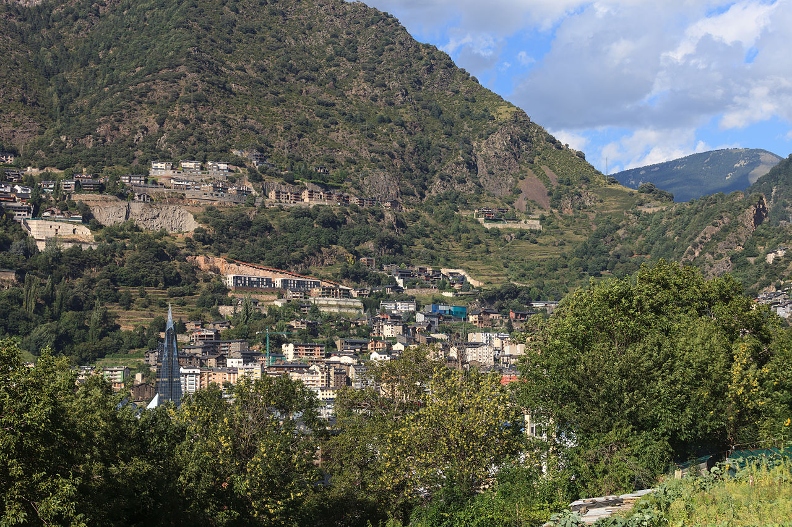

Escaldes-Engordany
- Avenida Carlemany
- Caldea
-
Valle del Madriu

Si os gusta la naturaleza y el senderismo, dentro de la parroquia de Escaldes, se encuentra el Valle del Madriu, declarado Patrimonio de la Humanidad por la Unesco en el año 2004, por el valor que tiene a nivel de paisajes,
como de animales y especies vegetales raras o en peligro de extinción.
Es el paraíso de cualqueir excursionista, ya que cuenta con una extensa red de rutas así como de refugios en los cuales podrás descansar o hasta incluso pasar la noche.